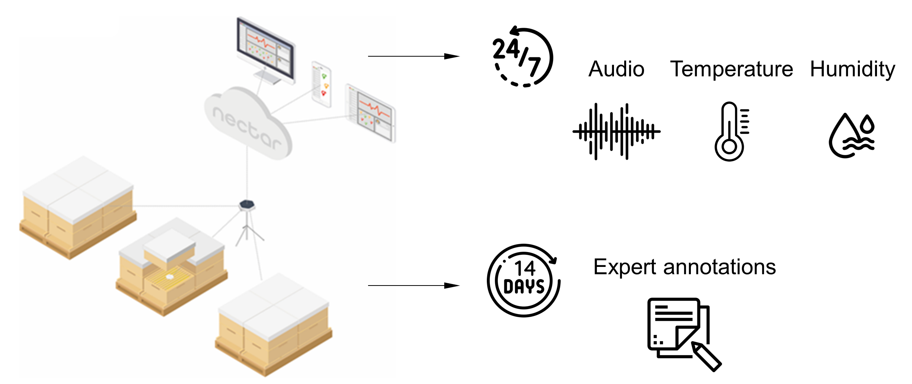

Our hive apiaries at (a) Dubuc, (b) Cote, and (c) a closer view of the hive chamber.

(a) sensor over the frames of the bottom brood chamber, and (b) the decomposed overall structure. From bottom-up: base board, two brood chambers, queen excluder, honey super showing frames and box, top cover roof.

Sensor data were collected 7/24 for 365 days from May-2020 to April-2021, phenotypic measures were evaluated bi-weekly.